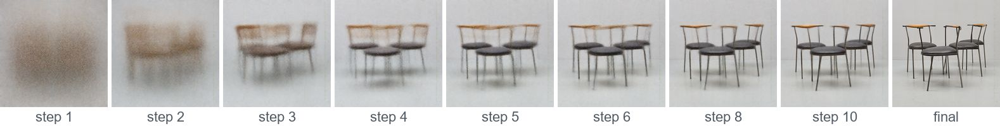
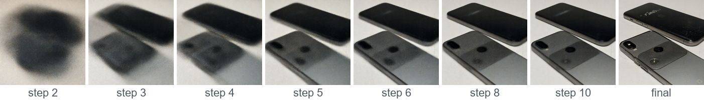

A month of chasing when diffusion models make up their mind
Text-to-image models often get the number of objects wrong: ask for three apples and you get two. The usual fix is to look at the finished image and draw again. I spent a month asking whether the mistake can be caught during generation instead.
The mistake is made before you can see it
Watching the one-step previews along a generation, the layout of a scene appears while the image is still a blur. Interventions late in sampling change details but rarely the structure. That made the timing of a mistake, not just its existence, the thing I wanted to understand.

Looking closely helps, and so do negative results
Stepping through generations frame by frame, I noticed objects seem to split out of blobs and the model sometimes seems to hesitate between two arrangements. Early previews are an average over the outcomes the model is still considering, so hesitation appears as overlapping ghosts. Several of my ideas for fixing errors locally did not survive the tests I wrote down in advance; each failure narrowed down what kind of fix can work.

What I took away
- Write the pass/fail criterion before running the experiment. It makes dropping a favourite idea quick.
- Read widely before and after each turn. Related work turned up more than once and changed how I framed the question.
- Look at the pictures yourself. Several hypotheses came from staring at previews, not from numbers.
Comments are welcome by email.